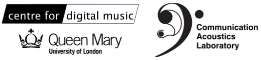
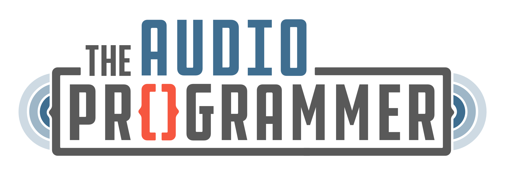
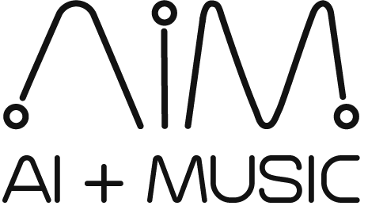
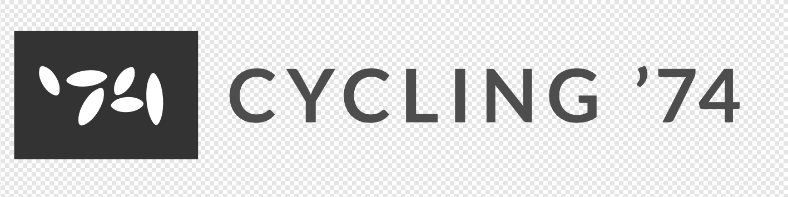
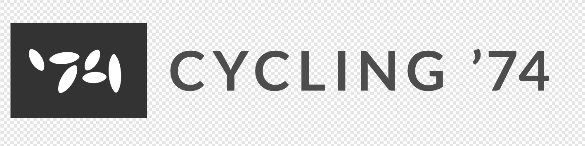

Navigation
- Timbre Tools for the Digital Instrument Maker
- Why a hackathon? Who is it for?
- What is a Timbre Tool?
- Creative Prompts
- Details
- Rules and Guidelines
Timbre Tools for the Digital Instrument Maker
The traditional luthier will select rosewood to create a dark and complex guitar sound. The analog synth designer may choose optical components for crafting warm tones. Yet timbre — or tone, texture, sound colour — is conspicuously absent from the digital instrument maker’s toolbox. Making digital musical instruments (DMIs) is still based on concepts from early analog and digital synthesis, and relies on classical tools like oscilloscopes and signal generators.
We seek to shift this perspective of DMI design to a more sound-based, timbre-first practice. Timbre Tools will augment and enrich the digital luthier’s workbench. Through building instruments using flexible, open-ended tools for timbral design, amongst other tools, makers and artists can learn about sound technologies, become more aware of timbre phenomena, and craft compelling new instruments.
Why a hackathon? Who is it for?
The Timbre Tools Hackathon aims to bring together practitioners and researchers in the fields of music technology, audio programming, deep learning, interaction and design engineering, and timbre studies (acoustics, perception, aesthetics). A hackathon is an opportunity to learn from one another, share methods and tools, explore risky ideas, foster collaboration, and innovate across disciplines and communities.
This is an interdisciplinary initiative. Participants from all stages of practice and research are welcome.
What is a Timbre Tool?
It supports the timbral design of digital musical instruments. It is a tool for instrument makers, composers, performers (who make their own bespoke instruments), and even live coders. We are currently engaging with these communities to produce creative prompts for the hackathon.
It is not a tool for musicians (who are not makers) and audiences. We are not looking to build new instruments, but to create new tools that aid the creative process of instrument making. Although we believe all musicians and audiences will ultimately benefit from Timbre Tools!
It can encapsulate one or several notions of the timbre gestalt: tone, sonority, texture, noise, resonances, harmonics, fluctuations, modulations, spectrograms, semantics, metaphor, crossmodality, embodiment, gesture, sensing, material, "the illusory stuff of our dreams" in Schoenberg's words, you name it!
It can be designed from scratch or based on available maker tools. It can be about sensor design and fabrication, interfacing between the physical and digital worlds, or enabling expressive control at multiple levels of meaningful abstraction, amongst many other ideas that we hope to co-develop with hackathon participants.
Machine learning and AI provide interesting opportunities to interface with sound via timbre, and can be a point of entry for creating a Timbre Tool. SP-Tools and the FluCoMa Toolkit are good examples, as are approaches to interactive exploration of latent space in neural audio synthesis.
Creative Prompts
We have been talking to makers, artists, live coders, exploring ways of meaningful engagement with timbre in their musical craft/making practice. These are the prompts that have emerged, and teams can use:
deep timbre – deep learning, deep listening, learning to listen
to infinity and beyond – explore, navigate, generate, timbre space
sensing timbre - sensors, materials, circuits, acoustics, embodiment
timbrecheck – live performance, sound recording, timbre in space
back to the future – analysis-by-synthesis, reflection, sound reproduction
timbre for all – community, social interaction, accessibility
Details
The Timbre Tools Hackathon will take place at the Mile End campus of Queen Mary University of London (QMUL) and anywhere on earth – remote participation is possible and encouraged – in 4 phases:
We have started putting together a living document of resources for working with and designing timbre. Closer to the Hackathon we will publish a list of physical materials for instrument making that we can provide to teams.
Rules and Guidelines
Code of Conduct
One of the primary goals of the Tiimbre Tools Hackathon is to foster an inclusive space for collaboration, creativity, and innovation. All skill levels and backgrounds are welcome.
We ask that all participants familiarize themselves with the Berlin Code of Conduct and follow this conduct in all communications, in-person and on Discord. Please refer to The Audio Programmer community guidelines for further guidance on communication within Discord.
Please reach out immediately to one of the hackathon organizers in-person or on Discord/Email if you experience something that doesn’t feel right. You can contact Charis Saitis via Discord at the username "noindent", or by email at c (dot) saitis (at) qmul (dot) ac (dot) uk.
Participating
All participants must register themselves and their teams. Links are available at the bottom of this page under the "REGISTER NOW" title. All team members must complete both registrations. We need everyone to individually fill out the participation consent form.
The Hackathon runs for 48 hours. We encourage participants to sleep, eat, exercise, and take wellness breaks during this time!
Team Rules
- Teams can have one to five members
- Hybrid teams of in-person and remote participants are welcome
- We encourage diverse teams with members that have different skill levels and backgrounds
Self-Reporting
A further goal of the Timbre Tools Hackathon is to support open research in music technology and the hackathon itself is part of a larger research study.
To collect information for this research, we ask that all teams submit small progress reports during the hackathon.
- Each team must submit hourly self-reports via Discord whilst working
- Each team will be provided with a private voice channel on Discord to submit reports
- Progress reports are meant to be bite-sized and should take no more than a minute of your team’s time each hour
- Include a photo, screenshot, and a sentence on what you’re working on
- You only need to submit progress reports when you’re actively working
Submissions
In order to be included in voting and considered for prizes, all teams must prepare:
- A short two minute presentation of their project and ideas. This can be presented in-person on Sunday evening or pre-recorded and submitted as a video.
- A public repository of source code (or instructions on how to recreate your project) under an Apache-2.0 or compatible licence. Open sharing of ideas is a primary objective of the Timbre Tools Hackathon and permissive licenses will help foster further work in this area.
Interactive demos, websites, audio plug-ins are all welcomed in submissions, but are not required to be considered for voting.
REGISTER NOW
Step 1: register yourself (closes Fri 23rd 5 PM GMT)Step 2: join The Audio Programmer on Discord
Step 3: register your team (closes Fri 23rd 5 PM GMT)
This site will be updated with further information as the hackathon approaches, and all registered participants will be updated via email. In the meantime, if you have any comments or questions, please email c (dot) saitis (at) qmul (dot) ac (dot) uk.
ORGANISERS
 
SPONSORS

 
